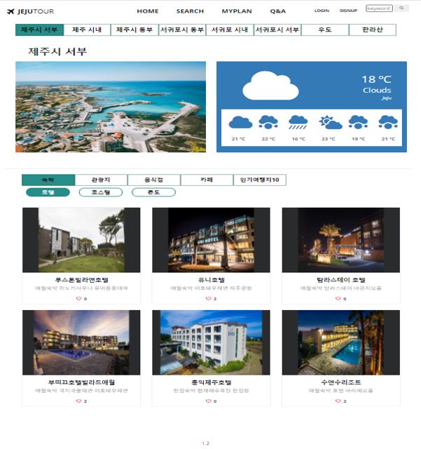

- 지역, 카테고리, 세부 카테고리에 따른 여행지 검색 기능입니다. 상위 탭 클릭 시, 하위 탭은 첫번째로 자동 지정되고 ajax로 조건에 맞는 여행지를 불러오도록 설계하였습니다.
여행지에는 onclick 이벤트를 설정하여 클릭 시, 여행지 상세 페이지로 이동되도록 하였습니다.
- 지역 클릭 시, 해당 지역에 맞는 대표 사진이 보여집니다. 플러그인 owl carousel을 사용하여 자동 슬라이드가 되도록 하였습니다.
- 제주도의 당일부터 일주일치의 날씨 정보를 Open Weather API를 활용하여 가져왔습니다. Font Awesome Icon을 사용하여 날씨 아이콘 ui를 설정했습니다.
- 여행지 상세 페이지에서 여행지 좋아요를 클릭할 수 있습니다. 여행지마다의 좋아요 개수는 검색 페이지에서 나타나며, 지역별 인기여행지10 탭 클릭 시, 좋아요 순으로 출력됩니다.
- 한 페이지 당 6개의 여행지가 보이고, 한 블록에 3개의 페이지만 보이도록 페이징 처리 하였습니다.